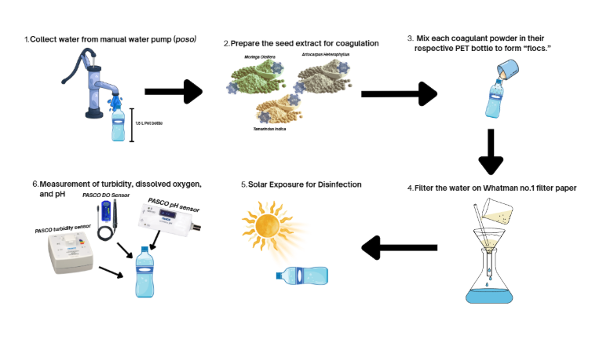

Introduction
Water quality is commonly assessed using turbidity, dissolved oxygen (DO), and pH. Turbidity refers to the cloudiness of water caused by suspended particles such as clay, silt, algae, and microorganisms, and is measured in Nephelometric Turbidity Units (NTU) (U.S. Geological Survey [USGS], n.d.). Turbidity is crucial for solar water disinfection (SODIS) because pathogen inactivation depends on ultraviolet (UV) light penetration. Measuring turbidity in Poso water allows evaluation of how effectively different seed coagulants improve water clarity, directly influencing SODIS efficiency. Dissolved oxygen (DO), measured in mg/L, indicates oxygen availability for aquatic organisms, and monitoring DO ensures that natural seed coagulants do not reduce oxygen levels or promote bacterial growth (Akvopedia, n.d.). pH, which measures water acidity or alkalinity, affects chemical reactions, microbial activity, and coagulant performance (World Health Organization [WHO], 2017). Regular pH monitoring ensures coagulant application does not compromise chemical balance or drinking water safety. Together, these variables provide a comprehensive assessment of water quality before and after treatment. According to the World Health Organization (2017), potable water should have turbidity below 5 NTU, pH between 6.5 and 8.5, and dissolved oxygen (DO) of at least 5 mg/L, which provides a benchmark for determining whether treated water is suitable for possible potable use.

Access to safe drinking water is challenging in communities that rely on manually pumped sources like Poso water. Solar water disinfection (SODIS) becomes less effective in turbid water because suspended particles block ultraviolet (UV) light, reducing its ability to inactivate pathogens (McGuigan et al., 2012). Clearer water allows UV to penetrate deeper, enhancing disinfection efficiency. Natural seed extracts offer an eco-friendly solution to improve water clarity before SODIS. Research shows that the seeds of Moringa (Moringa oleifera) contain cationic proteins that promote flocculation, helping particles clump together and settle, which improves turbidity removal (Ndabigengesere et al., 2025). Seeds of Tamarind (Tamarindus indica) also act as natural coagulants; blended tamarind seed powder has been shown to reduce turbidity effectively by trapping particles, likely due to its polysaccharide content (Singh et al., 2020). In studies involving Jackfruit (Artocarpus heterophyllus), seed powder has been tested for coagulation effects in water treatment, with some research showing potential turbidity reduction (Kumar & Singh, 2020). Including these seeds in the study helps determine which is most effective under household-level water treatment conditions, where simple, low-cost options are needed to make SODIS work better in real-world settings.
The effectiveness of seed-based coagulants has been demonstrated in prior research. Ndabigengesere et al. (2025) reported that Moringa oleifera seeds reduced water cloudiness by up to 90%, supporting the methodology for seed preparation and dosing. Singh et al. (2020) found that Tamarindus indica seeds clarified water without significantly altering pH, justifying the inclusion of pH and DO measurements alongside turbidity. Kumar and Singh (2020) observed that Artocarpus heterophyllus seeds slightly reduced turbidity, validating their use in a comparative study. Following Department of Science and Technology (DOST, 2021) guidelines, this study uses a positive control (distilled water) and a negative control (untreated Poso water), with measurements taken before and after SODIS. These studies collectively guide the experimental design, including coagulant selection, treatment intervals, and controls, ensuring that observed effects are attributable to the seed treatments and supporting scientifically valid results.